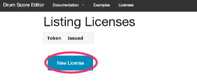
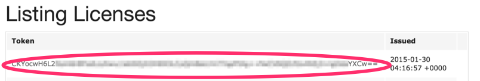
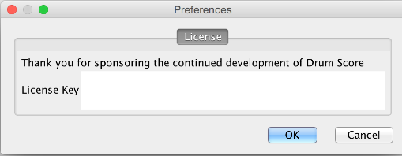

Drum
Score Editor
Drum
Score Editor
Drum
Score Editor
Drum
Score Editor
There is an ongoing issue between internet service companies which is preventing the automatic issue of licenses.
Please email Alan White if you wish to purchase a license, while we work to resolve this issue.
Although time is given freely, there are numerous costs that mount up for developer rights and certificates as well as hosting and distribution costs and helping cover those is much appreciated. In return for contributing, some helpful productivity features are enabled which we call studio features, these are covered in detail here.
First sign in here on this site. You can either create an account here or use your Facebook login. The use of Facebook to login is strongly encouraged as it prevents the need to remember yet another password for a website. This feature will be extended to Google accounts in the future.
Once signed in, a new item appears on the menu bar named Licenses. Clicking there will take you to a list of any previous licenses (contributions) you've made. This serves as an aide memoire in case you need your license key again.
Note there is no need to acquire a separate license for each PC or laptop you own. The same key works on any machine you use, The license is tied to your identity and email address only. This does mean you could generously just give others your license key, however that means Drum Score Editor isn't getting the support it needs and your identity is being added to their machines.
Click the New License button to be taken to a PayPal payment page where you can either use a card or a PayPal account if you have one to pay the displayed fee.
Once PayPal confirms payment, a license key is generated and appears in your list of licenses. Sometimes it takes many minutes for PayPal to confirm dependant on the card. Please click Licenses from the menu to refresh your list of licenses.
Start Drum Score Editor and then use the menus to navigate to the license dialog.
Once the dialog is displayed copy and paste the license key from the website into the area provided and click apply. Please make sure you copy the license key content and not the web address of it by selecting the whle license key displayed.
Next close down Drum Score Editor completely, as license checks are performed when the app starts and features enabled as appropriate.